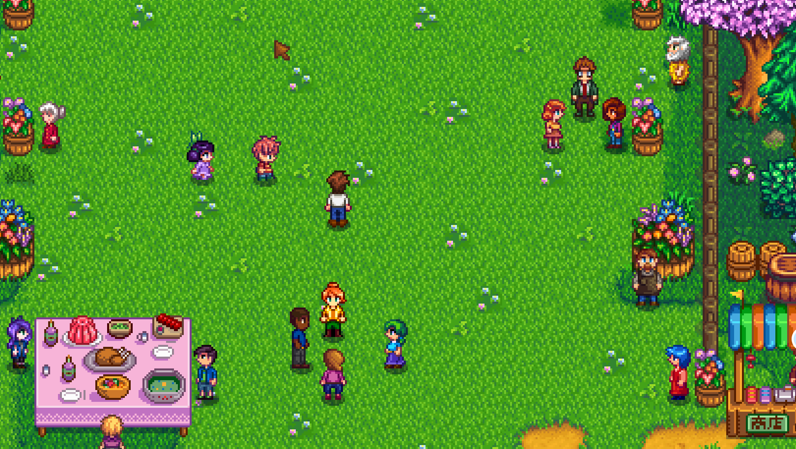
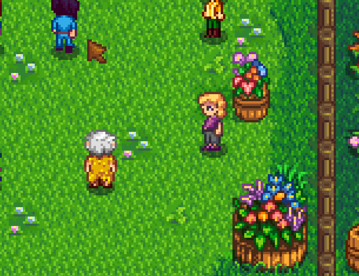
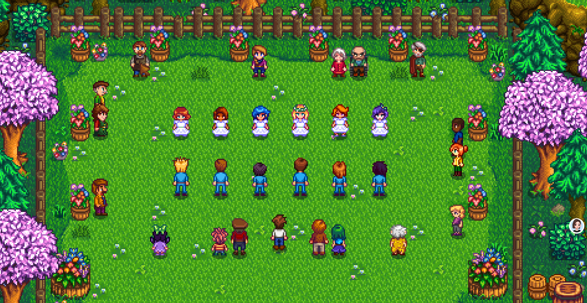

Quick answers (read this first)
- Flower Dance is on Spring 24 (mail reminds you). Arrive in the daytime window—do not sleep through it.
- Location: forest clearing west of Cindersap Forest (south of the farm, then west).
- Year 1 players often cannot dance yet—friendship thresholds block partners. Watching is still progress for your town knowledge.
- Water crops before you leave if it is sunny; festival days still end when you leave the event.
- Skip panic gift routes the morning of the festival if your farm is already behind.
Who this is for (and who should skip)
Use this if the mail scared you, you got lost looking for the clearing, or you feel “behind” for not dancing in Year 1. Our first Flower Dance ended with us standing in the crowd watching Haley and Emily spin while our friendship hearts were still single digits—that was a normal outcome, not a failed save.
Skip or skim if you already optimize festival gifts and dance partners every year. This page is first-festival calm, not marriage speedrunning or heart-count spreadsheets.
Version note (Stardew Valley 1.6): Festival timing, map layout, and the western forest clearing remain consistent with recent patches. Booth stock and cosmetic items can vary; we prioritize attendance, routing, and realistic Year 1 expectations over frozen item lists that may change between updates.
From our Year 1 save (real pitfalls):
- Year 1 dance invite declined—hearts too low. Spectating from the crowd was the normal outcome, not a failed save.
- We got lost going north from the farm once. South into Cindersap Forest, then west to the decorated clearing.
- Screenshots 31, 32, and 34 below are from spectating: grounds, faces, and the dance cutscene—no partner required.
Pros & cons of attending in Year 1
| Details | |
|---|---|
| Pros | See everyone in one place; learn faces; festival screenshots; low combat stress day. |
| Cons | Uses a calendar day; dance partner may be locked; easy to overspend at the booth. |
| Use when | You got the letter and can reach the forest before the event closes. |
| Skip when | You would miss critical watering with no rain and already feel overloaded—rare, but valid. |
Personal tips from our Year 1 save
We set out mid-morning after watering, wandered the clearing, and took screenshots like the ones below before the dance cutscene started.
One dance invite got declined—hearts were too low. Watching from the crowd was the normal Year 1 outcome, not a consolation prize. We skipped the booth on a tight seed budget; photos of the flower barrels cost nothing.
Interactive checklist
Tick as you play. Saved in this browser only.
Safe to skip (anti-FOMO)
- Buying every booth cosmetic on a thin seed budget.
- Gift-bombing every romance candidate the same morning.
- Feeling obligated to dance in Year 1.
- Comparing your festival day to edited highlight videos.
- Restarting the save because nobody accepted your dance invite—hearts take weeks of normal play.
Decision table: dance or spectate?
| Situation | Do this | Mindset |
|---|---|---|
| Partner invitation works | Dance if you want the moment | Bonus, not a requirement |
| Nobody will dance with you | Spectate + talk + leave happy | Normal Year 1 outcome |
| You are lost in the forest | Keep west along the forest; look for decorated clearing | Map later; festival first |
| Gold is for Summer seeds | Browse booth, buy nothing | Photos are free |
Comparison table: festival morning priorities
| Priority | Do first | Can wait |
|---|---|---|
| Crops (sunny day) | Water before leaving farm | Extra field expansion |
| Animals | Feed and pet if you keep livestock | Building new coops |
| Travel | Leave mid-morning for the forest clearing | Shopping elsewhere in town |
| Social | Talk to villagers you rarely see | Perfect dance partner |
Real screenshots from our Year 1 save

Game screenshot © ConcernedApe — used for guide commentary

Game screenshot © ConcernedApe — used for guide commentary

Game screenshot © ConcernedApe — used for guide commentary
How to attend (operations)
Eight steps from waking up to going home without FOMO:
- Read the festival mail so you know the date and time window.
- Water crops on sunny mornings before you travel.
- Feed animals and finish urgent chores so guilt does not pull you back mid-festival.
- Travel south into Cindersap Forest, then west to the decorated clearing.
- Enter during the open daytime window. Arriving too late means missing the event.
- Walk, talk, browse the booth optionally. This is a social field trip, not a performance review.
- Ask one partner to dance if you want—accept “not yet.” Spectating from the crowd is a complete Year 1 experience.
- Leave when ready. Sleep and plan Summer—not a save restart.
Common mistakes
- Arriving too late. Festival windows are real—set out mid-morning, not after an all-day mining binge.
- Searching north of the farm. Wrong direction. Go south into the forest, then west to the clearing with decorations.
- Calling Year 1 a failure for not dancing. Friendship hearts take weeks of gifts and conversation. The dance is a bonus for prepared saves, not a Year 1 requirement.
- Spending seed money on booth fluff. Summer crops do not care about your flower hat. Browse, admire, walk away if gold is tight.
- Skipping watering beforehand. Sunny festival mornings still dry your dirt. Wilted parsnips hurt more than missing a dance partner.
Alternative variations
- Screenshot tourist: Capture grounds, booth, and dance like our photos above—then leave. Perfect for guide sites and memory keeping.
- Social day: Talk to five villagers you barely know; ignore shops entirely. Low cost, high town knowledge.
- Romance prep (later years): Build hearts through normal play first, then plan a dance partner for Spring Year 2 or beyond.
FAQ
Can I dance in Year 1?
Sometimes—if friendship is high enough with an eligible bachelor or bachelorette. Many first saves only watch from the crowd because hearts were still low. Both outcomes are valid; spectating is OK.
Do crops die if I attend?
Water before you go on sunny days. The festival consumes the day when you participate and leave, so plan your morning chores before traveling to the forest.
Is the Flower Dance required?
No. It is optional town life and a seasonal screenshot opportunity. Missing it once is not a broken save—you can attend next Spring.
What if I cannot find the clearing?
From the farm, go south into Cindersap Forest, then continue west along the forest path. Look for flower barrels, a food table, and clustered villagers. If you pass the wizard’s tower area without seeing decorations, backtrack and try the western fork.
Should I gift everyone before the dance?
Only if you already planned gifts and your farm is on schedule. Panic gift-bombing the morning of the festival rarely fixes low hearts and can waste items better used on normal friendship days.
Next steps / related pages
Unofficial fan guide. Not affiliated with ConcernedApe.